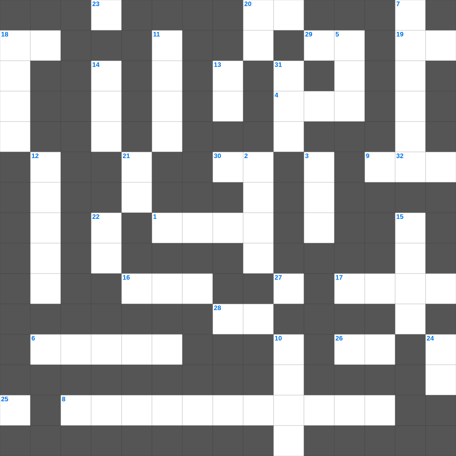

성경 속 동물 이야기
📌 서비스 정의
십자가로세로는 교회 주보와 주일학교에서 사용할 수 있는 성경 기반 가로세로 퍼즐 서비스입니다. 성경 인물, 사건, 핵심 구절을 바탕으로 제작되었습니다. 온라인 풀이 및 인쇄 기능을 제공합니다.
📖 이 글은 어떤 내용인가요?
성경에는 다양한 동물들이 등장하여 중요한 사건이나 가르침의 배경이 됩니다. 노아의 방주에 들어간 동물들, 발람의 나귀, 요나를 삼킨 큰 물고기, 다니엘과 함께한 사자 등은 신앙적 의미를 담은 이야기로 전해집니다. 이 퍼즐은 성경 속 동물과 관련된 이야기들을 정리합니다.
📚 핵심 포인트
노아의 방주와 동물들 · 발람의 나귀 · 요나를 삼킨 큰 물고기 · 사자굴 속 다니엘 · 양과 목자의 비유
오늘은 성경의 주요 내용을 담은 성경 무료 성경퀴즈를 준비했습니다. 총 35개의 힌트가 있으며, 주일학교 교재나 성경공부 자료로 활용하기 좋습니다. 무료로 즐기는 성경 가로세로 퍼즐을 지금 바로 풀어보세요!

📝 가로 힌트
1. 요나를 삼켰던 존재
4. 보라 내가 만물을 이것하게 하노라
6. 산 위에서 예수님의 모습이 광채로 변함
8. 수가성 여인과 물가에서의 대화
9. 수고하고 무거운 짐진 자들아 다 내게로 이것
16. 매우 작은 씨앗의 대명사
17. 빌립이 전도한 제자
18. 언약궤를 덮고 있는 두 천사 형상
19. 다윗이 연주하던 악기
20. 어려운 이웃을 돕는 일
23. 너희는 먼저 그의 나라와 그의 이것을 구하라
25. 주의 말씀은 내 발에 이것이요 내 길에 빛이니이다
26. 땅의 짐승과 기는 것(여섯째 날)
28. 혼인 잔치에 이것을 입지 않은 사람
29. 너희는 말씀을 행하는 자가 되고 이것만 하여 자신을 속이는 자가 되지 말라
30. 바울의 고향
32. 여호와 이것: 치료하시는 하나님
📝 세로 힌트
2. 롯의 아내가 뒤를 돌아보다 변한 것
3. 예수님이 승천하신 산
4. 공중에 나는 이것(다섯째 날)
5. 내 형제들아 너희가 여러 가지 시험을 당하거든 온전히 이것게 여기라
7. 내게 능력 주시는 자 안에서 내가 모든 것을 이것할 수 있느니라
10. 나는 이것나무요 너희는 가지니
11. 쉬지 말고 이것하라
12. 구하라 그리하면 너희에게 이것을 주실 것이요
13. 수고하고 무거운 짐진 자들아 다 내게로 오라 내가 너희를 이것케 하리라
14. 노아의 방주에 탄 사람의 총수
15. 드보라 사사가 재판하던 나무
18. 살아계신 하나님의 아들
20. 누구든지 주의 이름을 부르는 자는 이것을 받으리라
21. 너는 내게 부르짖으라 내가 네게 이것하겠고
22. 새 예루살렘 성곽의 첫 번째 기초석
24. 우리가 선을 행하되 이것하지 말지니
27. 공의를 마르지 않는 이것 같이 흐르게 하라
31. 베드로와 안드레의 고향
🧩 이 퍼즐에서 배우는 내용
이 퍼즐은 성경 속 동물 이야기의 핵심 단어와 개념을 자연스럽게 복습할 수 있도록 구성되었습니다. 주일학교 수업이나 개인 성경공부에서 학습 내용을 점검하는 용도로 바로 활용할 수 있습니다.
🧑🏫 교회 교육 자료 활용
이 퍼즐은 주일학교 교재 추천 자료로 활용할 수 있고, 주일학교 주보에 넣기 좋은 분량으로 구성되어 있습니다. 수업용 주일학교 교안에 활동지로 붙이거나, 예배 후 복습용 주일학교 공과교재로 바로 사용할 수 있습니다.
🏷️ 키워드
성경 무료 성경퀴즈, 성경, 십자가로세로, 성경퀴즈, 말씀퀴즈, 가로세로퍼즐, 주일학교 교재 추천, 주일학교 주보, 주일학교 교안, 주일학교 공과교재